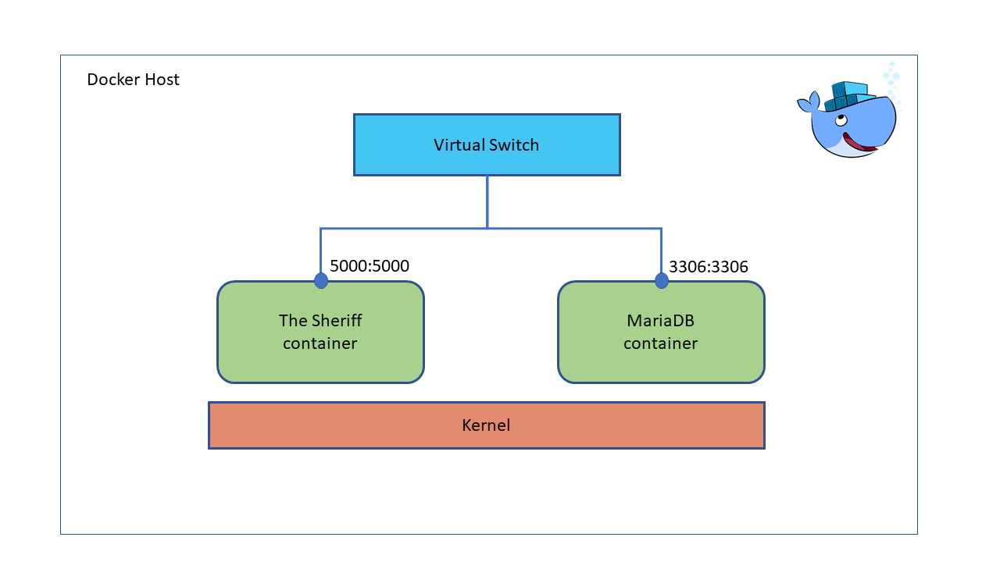

Technologies¶
This section is intended to explain the technologies used in The Sheriff to implement the infrastructure details of the application.
These tools are found within the Infrastructure layer of the Hexagonal Architecture, and they have relation with other classes located in the Domain layer. These relations are created by implementing the defined contracts, and these are detailed in the last point of this section. Besides, an impact analysis of what would happen if a technology is switched by another one, in order to analyse the modularity of the system.
GNU Make¶
GNU Make helped the team not having to deal with long commands and tooling details, through out the use of few targets on the Makefile, found at the root of the project, the team could easily run linting tests, unit tests, start the whole stack, etc.
Docker¶
Docker is used for delivery means. Docker is a container runtime, that helped the team to have a cross-platform way of running, testing and validating the application without the potential problems of cross-platform development.
The Sheriff application is built as a container image that includes all its dependencies and defines the command to start the application.
For the persistance of the application, MariaDB has been selected, also used as a container, it didn’t need any modification, just configuring.
The Sheriff container image is built using Dockerfile.thesheriff file, found at the root of the repository.
For glueing both continers, docker compose was our tool of choice for its declarative approach and flexibility.
Docker compose allowed the team to configure both containers as a single stack, declared in the docker-compose.yml.
The Sheriff configuration looks like:
{kind=link}
Docker and docker compose allows the application to have a huge modularity. If anytime the client wants to change any configuration on the stack, it’s just a matter of changing settings in the docker-compose.yml file.
Summarizing, Docker has been chosen for:
Its modularity.
Cross-platform capabilities.
Its flexibility.
In brief, both tools helped the team saving time in configuring the development environment and deciding the delivery method.
Curl¶
Curl is an open source application used in command line or script to interact with websites.
In The Sheriff, curl is used to interact with Controllers, on the Infrastructure layer.
Curl lets the user to provide information and trigger the desired application use case.
For example, to create an outlaw, the user should write in the command line:
- $ curl localhost:5000/api/<version>/outlaw/ \
-X POST –data @examples/json/create_outlaw.json \ -H ‘Content-Type: application/json’
This use case triggering will be done posting a concrete JSON contents in the specified URL.
Summarizing, Curl has been chosen to:
For easily Allowing communication between the user and the application (specifically in this direction).
Python¶
Python is an open source programming language, friendly to use, easy to learn, and extensible with a lot of available third-party libraries.
The Sheriff application has been programmed in Python.
Basically, it has been chosen mostly due to its low learning curve and its wide range third-party libraries. The following sections detailed the chosen third-party libraries and their use in the infrastructure package.
If at anytime the client desires to change this technology, the application would be very compromised, at some point that we will have to change all the logic of the application (including the whole infrastructure implementation).
Flask¶
Flask is a web application micro framework. Being micro it gives the developer the freedom to choose the libraries desired to implement the web-application without imposing much on the model or architecture.
In The Sheriff, *Flask, serves the purpose of implementing the controllers, defining routes (or REST endpoints) through the concept of Blueprints, so each domain entity has its own controller with its own set of routes, getting the data, where needed, using JSON and posted using curl. From each endpoint the associated use case/s are invoked and the use case flow starts.
Summarizing, Flask has been used for:
Blueprints to define routes and the way to invoke use cases with their required data.
Flask Responses and Requests returned and dispatched to control the flow in several endpoints.
Jsonify to deliver JSON bodies, within the Response object, back to the user interacting with an endpoint.
SQLAlchemy¶
SQLAlchemy is a Python SQL toolkit. It allows the developer to use in a friendly way the SQL database through persistence patterns.
In The Sheriff, it has let the application to persist all the information dealt with in the domain entities.
SQLAlchemy has been used for:
Ease of interacting with a SQL Database.
Abstraction from the SQL engine itself, allowing to replace the engine with just defining the appropriated connection string.
Table creation, using its MetaData object, shared among all repositories, allows to create relationships that are taken care for transparently.
Smtplib¶
The smtplib module is an SMTP client implementation to send mails to any Internet machine with an SMTP service. It uses RFC 821 (Simple Mail Transfer Protocol) and RFC 1869 (SMTP Service Extensions).
In The Sheriff is the library used to send email notifications with the information required for the application, according the use case that triggers the action.
Contracts¶
These aforementioned technologies are implemented in infrastructure classes. These classes implement the contracts or interfaces defined in the Domain layer.
Taking a look in the class diagram, it can be observed all the contracts in The Sheriff.

Zooming in to the Infrastructure layer, it can be seen the implementation of these interfaces:

In conclusion, to fulfill all the actions contained, for example, in the “XXXX_Raid” use case, the use case will lead to call a method in the RaidRepository and implementation in found in the MySQLRaidRepository.
And this conclusion can be extended for the rest of the classes seen in the last diagram.